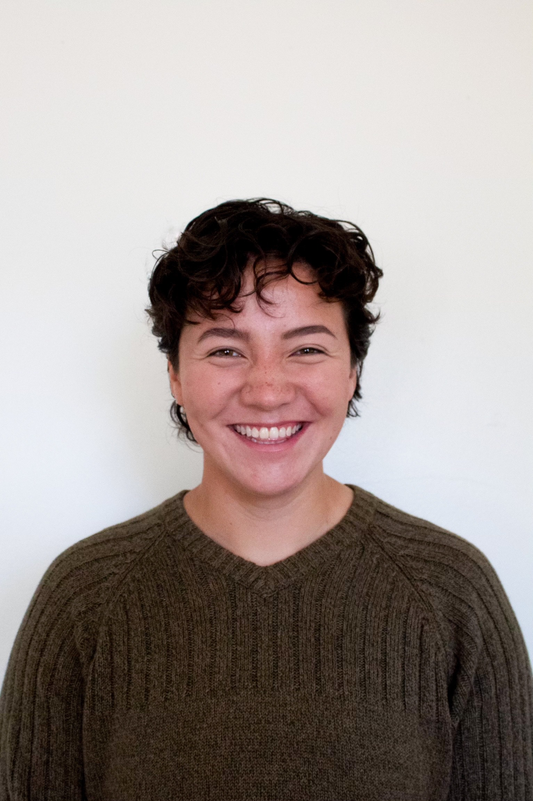
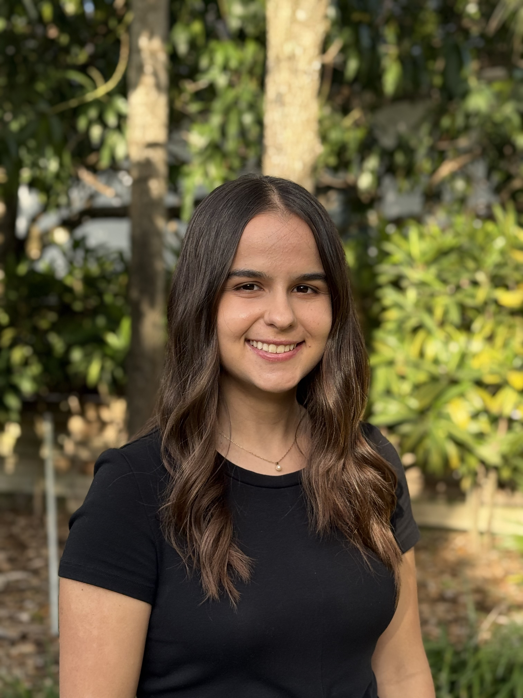
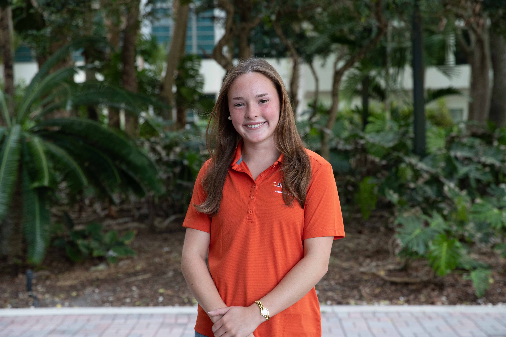
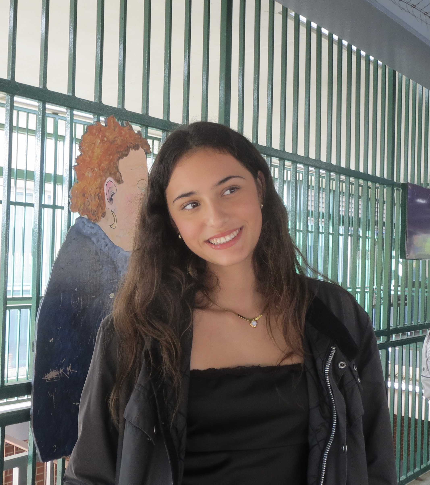
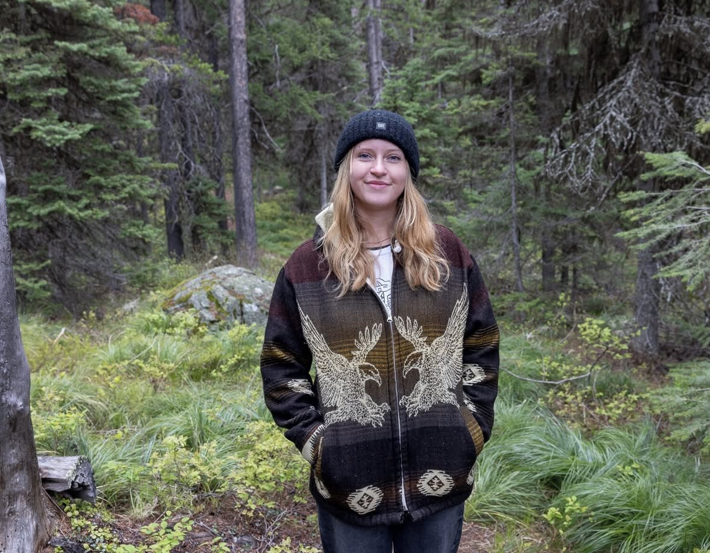

PhD Students
JD Reigrut
I am a first year Dean’s Fellow and PhD student in Environmental Science in Policy. I graduated with honors from Vassar College in 2025 with a degree in Biology, and a minor in Earth Science. Previously, I worked on the TEMPO project at UC Santa Barbara, studying community- based temporary fishery closures.
My current research focuses on creating equitable social-ecological solutions for fisheries management. For my dissertation, I aim to use quantitative and qualitative modeling methods to investigate how who designs fishery closures impacts who benefits from them.

Gabriella Berman
I am a fourth year JD/PhD student in the Department of Environmental Science and Policy where I conduct interdisciplinary research applying geocomputational tools and legal scholarship to study resource extraction and biodiversity in the high seas. I earned my J.D. with a concentration in environmental law from the University of Miami’s School of Law in December 2024. I also hold an M.S. in marine biology from Scripps Institution of Oceanography at the University of California San Diego where I used genetic tools to discover new deep-sea species and study their ranges, as well as a B.S. in biology with a concentration in genetics and evolution from the University of Montana where I studied the evolution of large horns in Japanese rhinoceros beetles. I am originally from Maui, Hawai’i and passionate about all things related to the ocean.
Master’s Students
Emily Rodriguez
I am a Master’s of Professional Science student in the Coastal Zone Management track. I graduated from the University of Miami in 2025 with a degree in Marine Biology and Ecology and a minor in Marine Policy. I have previously worked in species distribution modeling of sandbar sharks in relation to policy changes.
My current work and research focuses on compiling catch and effort data from Regional Fisheries Management Organizations (RFMOs) into a single, harmonized dataset. I will use this dataset to test the “Blue Paradox”: the phenomenon in which fishers intensify fishing effort in areas designated for closure during the window between policy announcement and formal implementation.

Sabirah Carfagna
I am an M.S. student in the Department of Environmental Science and Policy at the University of Miami and hold a B.S. in Physics from Emory University. My previous work focused on modeling and experimental analysis of physical systems, including optical spectroscopy, thermal diffusion, and fluid dynamics.
My work and research now focus on how climate change may alter the effectiveness of Territorial Use Rights for Fisheries (TURFs) in Mexico under different climate scenarios by shifting species distributions and habitat suitability.
Undergraduate students
Maggie Smith
I am a third year undergraduate student at the University of Miami pursuing a major in marine affairs with a minor in ecosystem science and policy. I am currently working on populating a database of large scale marine protected areas (LSMPAs) in locations that are intensively fished for tuna. The goal is to bridge the research gap between LSMPAs and highly migratory species to understand the efficacy of these management policies in their broader goal of conservation. Due to extensive policy shifts concerning the Pacific Islands Heritage Marine National Monument from its creation to present day, I am also focused on creating a comprehensive timeline of the monument and tuna fishing activity throughout each policy change.

Morgan Whaley
I am a second-year undergraduate student at the Rosenstiel School of Marine, Atmospheric, and Earth Science, pursuing a Bachelor of Arts in Marine Affairs with a minor in Law & Politics. I am very interested in the social side of environmental science, with a focus in coastal law and ocean policy. Projects in Marine Protected Area research as well as marine science outreach to the public are of particular interest to me.
Currently, I am compiling datasets of federally protected species in the Pacific and of bycatch species caught in high seas fisheries for projects on commercial fishing activity inside the Pacific Island Heritage Marine National Monument and on overlap between deep-sea mining and high seas fisheries.

Summer Interns
Alexandra Papp
I am a senior at Mast Academy where I commit to rigorous coursework and serve as president of the Math Honor Society. I am passionate about conserving the environment through A Zero Waste Culture where I have helped divert 200 tons of my community’s organic waste from landfills, turning it into fertilizer instead. I have gained research experience at NOAA Fisheries, where I contributed to an ecosystem status report for the Gulf of Mexico and investigated the effects of red tide on fishermen behavior. In the near future I want to study economics and am interested in the intersection of environmental science and economic policy.

PI - Juan Carlos Villaseñor-Derbez
I am an Assistant Professor in the Department of Environmental Science and Policy and a Core Faculty member at the Frost Institute for Data Science and Computing. I hold a B.Sc. in Oceanography from UABC (Mexico), and a master’s and Ph.D. in Environmental Science and Management from the Bren School of Environmental Science & Management at UC Santa Barbara.
I use modern data science tools, extensive vessel-tracking data to study the human dimensions of marine policy and environmental change, with a focus on our three pillars. I am part of the Ocean100+ Steering Committee and the Society for Conservation Biology’s Impact Evaluation Working Group Mentoring Program.

Past students
